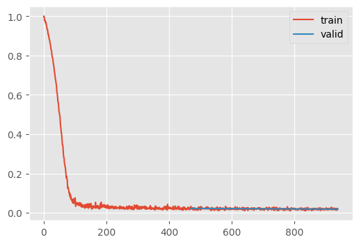

plt.style.use("ggplot")DDPM and Mixed Precision
In this module, we implement the DDPM training and inference algorithm using the Huggingface U-net implementation. We also adopt some hardware-level performance improvement to train much more quickly.
Adapted from:
Prelude
The huggingface U-net requires an image that has a height/width of a power of 2.
I’m also removing global normalization, as that seemed to degrade performance compared to scaling between -0.5 and 0.5.
get_dls
get_dls (bs=128)
dls = get_dls()
xb, _ = dls.peek()
xb.shapetorch.Size([128, 1, 32, 32])show_image(xb[0, ...])plt.hist(xb.view(-1))(tensor(-0.5000), tensor(0.5000))plt.hist(xb.view(-1))(array([70274., 4709., 4792., 5277., 6619., 6254., 7328., 9274.,
11526., 5019.]),
array([-0.5 , -0.40000001, -0.30000001, -0.2 , -0.1 ,
0. , 0.1 , 0.2 , 0.30000001, 0.40000001,
0.5 ]),
<BarContainer object of 10 artists>)The diffusion model paper is available here and proposes an important simplification that improved the performance of this kind of modeling.
Is diffusion ideal for generating images?
Jeremy mentions that, even shortly after the Stable Diffusion release, better models were in progress that had comparable performance that do not use diffusion. “Iterative refinement” may be a better term that encompasses other models, such as GANs.
See this clarifying post for details.
Review, lesson 9b
“Generative modeling” produces some complicated probability distribution, such that sampling produces a complicated example. GAN’s and VAE’s can produce such a distribution, and iterative refinement models can do so as well.

The forward process is defined recurively like so: \[ q(x_t | x_{t-1}) = \mathcal{N}(x_t; \sqrt{1-\beta_t} (x_{t-1}), \beta_t I) \]
During the forward process of diffusion, the mean decreases and the variance increases. In other words, the original image is lost and is replaced by pure noise.
It’s easy to compute the forward process for a given \(X\) and \(t\). There is, in fact, a closed-form solution for a given \(\{\beta_0,...,\beta_T\}\)
\[ \begin{align*} \epsilon &\sim \mathcal{N}(0, I) \\ \alpha_t &= 1-\beta_t \\ \bar{\alpha_t} &= \prod_{i=0}^t \alpha_i \\ x_t &= \sqrt{\bar{\alpha_t}} x_0 + \sqrt{1-\bar{\alpha_t}} \epsilon \end{align*} \]
s = LMSDiscreteScheduler(
beta_start=0.00085,
beta_end=0.012,
beta_schedule="scaled_linear",
num_train_timesteps=1000,
)
fig, (a0, a1, a2) = plt.subplots(1, 3, figsize=(8, 3))
a0.plot(s.betas)
a0.set(xlabel="Time", ylabel=r"$\beta$")
a1.plot(s.sigmas)
a1.set(xlabel="Time", ylabel=r"$\sigma$")
a2.plot(s.alphas_cumprod)
a2.set(xlabel="Time", ylabel=r"$\bar{\alpha}$")
fig.tight_layout()To review:
- \(\beta\) and \(\sigma\) are the mean and standard deviation (respectively) of the noise added to the image at each step
- \(\bar{\alpha}\) is the cumulative amount of noise added at a particular time
To train this model, we:
- Randomly select a timepoint, \(t\) and add the apropriate amount of noise to the image
- Predict the added noise and back-prop with MSE loss
Specifically, we need the equation from the paper Algorithm 1.
\[ \begin{align*} t &\sim Uniform(\{1,...,T\}) \\ \epsilon &\sim \mathcal{N}(0, I) \\ loss &= MSE \left( \epsilon, \epsilon_\theta ( \sqrt{\bar{\alpha_t}} x_0 + \sqrt{1-\bar{\alpha_t}} \epsilon, t ) \right) \\ \end{align*} \]
Here, \(\epsilon_\theta\) is a neural network that predicts the mean and uses a fixed variance.
DDPM
DDPM (n_steps=1000, βmin=0.0001, βmax=0.02)
Modify the training behavior
By iteratively predicting the noise and removing it, ultimately we end up with a high probability data point.
This is defined in Algorithm 2 in the DDPM paper
\[ \begin{align*} z &\sim \mathcal{N}(0, I) \text{ if } t > 1 \text{ else } z=0 \\ \hat{x}_{t-1} &= \frac{1}{\sqrt{\alpha_t}} \left( x_t - \frac{1-\alpha_t}{\sqrt{1-\bar{\alpha}_t}} \epsilon_\theta(x_t, t) \right) + \sigma_t z \end{align*} \]
Let’s break this down into manageable chunks
| Equation | Description |
|---|---|
| \[z \sim \mathcal{N}(0, I) \text{ if } t > 1 \text{ else } z=0\] | Samples a noise vector from a standard normal distribution if t > 1, otherwise sets z to 0 |
| \[\epsilon_\theta(x_t, t)\] | Represents the neural network |
| \[\frac{1-\alpha_t}{\sqrt{1-\bar{\alpha}_t}}\] | The predicted noise scaling factor required such that the mean of the predicted noise matches that of \(x_t\) |
| \[x_t - \frac{1-\alpha_t}{\sqrt{1-\bar{\alpha}_t}} \epsilon_\theta(x_t, t) \] | \(\hat{x}_0\) |
| \[ \frac{1}{\sqrt{\alpha_t}} \] | The overall scaling factor required such that adding $ _t z $ yields a mean and variance apropriate to the schedule |
| \[\sigma_t z\] | Noise to add to the predicted \(x_0\) to get \(x_{t-1}\) |
See Tanishq’s post for details on the derivation of the coefficients.
sample
sample (model, sz=(16, 1, 32, 32), device='cpu', return_all=False)
Architecture
Our model is a U-Net, with some modern tricks like attention.

UNet2DModel().down_blocks[0]DownBlock2D(
(resnets): ModuleList(
(0-1): 2 x ResnetBlock2D(
(norm1): GroupNorm(32, 224, eps=1e-05, affine=True)
(conv1): LoRACompatibleConv(224, 224, kernel_size=(3, 3), stride=(1, 1), padding=(1, 1))
(time_emb_proj): LoRACompatibleLinear(in_features=896, out_features=224, bias=True)
(norm2): GroupNorm(32, 224, eps=1e-05, affine=True)
(dropout): Dropout(p=0.0, inplace=False)
(conv2): LoRACompatibleConv(224, 224, kernel_size=(3, 3), stride=(1, 1), padding=(1, 1))
(nonlinearity): SiLU()
)
)
(downsamplers): ModuleList(
(0): Downsample2D(
(conv): LoRACompatibleConv(224, 224, kernel_size=(3, 3), stride=(2, 2), padding=(1, 1))
)
)
)train
train (model, lr=0.004, n_epochs=2, bs=128, opt_func=<class 'torch.optim.adam.Adam'>, extra_cbs=[], ddpm=<__main__.DDPM object at 0x7f20958bc9d0>)
fashion_unet
fashion_unet ()
Let’s give this a test run.
imgs = ddpm.sample(unet)
show_images(imgs)100%|████████████████████████████████████████████████████████████████████████████████████████████████████████████████████████████████████████████████| 999/999 [00:14<00:00, 68.60time step/s]Initialization
diffusers does not perform initialization. Let’s fix this by:
- Making the non-residual weights into a zero-convolution, such that the training dynamics resemble that of a smaller, more stable network
- Using orthoganol initialization for the downsampler blocks
Orthoganol initialization
Jeremy mentions here that he spoke to Katherine Crowson who wrote K-diffusion and recommended using orthoganol initialization. To understand the motivation behind orthoganol weights, Jeremy recommends taking Rachel’s Thomas’ computational linear algrebra course.
I’ll take a shot at summarizing this. Suppose \(W\) is a matrix where each row is approximately orthonormal to each other row and has a unit-magnitude. Under such a linear transormation, the scale of the input vector is preserved. (An identity matrix has the same property.)
Moreover, orthonormal feature extractors may learn different representations of the input features. This is basically a change of basis function, so neurons will have a mixure of different features in a different from the underlying layer, but the magnitude does not change.
init.orthogonal_?Signature: init.orthogonal_(tensor, gain=1) Docstring: Fills the input `Tensor` with a (semi) orthogonal matrix, as described in `Exact solutions to the nonlinear dynamics of learning in deep linear neural networks` - Saxe, A. et al. (2013). The input tensor must have at least 2 dimensions, and for tensors with more than 2 dimensions the trailing dimensions are flattened. Args: tensor: an n-dimensional `torch.Tensor`, where :math:`n \geq 2` gain: optional scaling factor Examples: >>> # xdoctest: +REQUIRES(env:TORCH_DOCTEST_LAPACK) >>> w = torch.empty(3, 5) >>> nn.init.orthogonal_(w) File: ~/micromamba/envs/slowai/lib/python3.11/site-packages/torch/nn/init.py Type: function
init_
init_ ()
unet = fashion_unet()
unet.init_()
train(unet, n_epochs=1);| loss | epoch | train |
|---|---|---|
| 0.839 | 0 | train |
| 0.996 | 0 | eval |
This (sometimes) explodes at the highest learning rate. Recall, in RMSProp, the gradients are divided by the expontentially weighted square of the gradients plus \(\epsilon\). If the gradients are small, and \(\epsilon\) is also small, then the learning rate becomes extremely large.
Increasing \(\epsilon\) can mitigate this.
unet = fashion_unet()
unet.init_()
ddpm = train(unet, opt_func=partial(torch.optim.Adam, eps=1e-5))| loss | epoch | train |
|---|---|---|
| 0.129 | 0 | train |
| 0.022 | 0 | eval |
| 0.020 | 1 | train |
| 0.018 | 1 | eval |

CPU times: user 1min 2s, sys: 4.74 s, total: 1min 7s
Wall time: 1min 8sThis might slightly improve results. I was getting about twice the loss as Jeremy’s version, but I removed the global normalization and now I get competitive performance without orthoganol normalization.
Speeding up training
GPUs are extremely fast at 16-bit precision. Unfortunately, not everything can be done at such low precision. Most training is performed using “mixed precision.”
We can adapt the example in the Torch docs to that of a Callback
use_amp = True
net = make_model(in_size, out_size, num_layers)
opt = torch.optim.SGD(net.parameters(), lr=0.001)
scaler = torch.cuda.amp.GradScaler(enabled=use_amp)
start_timer()
for epoch in range(epochs):
for input, target in zip(data, targets):
with torch.autocast(device_type=device, dtype=torch.float16, enabled=use_amp):
output = net(input)
loss = loss_fn(output, target)
scaler.scale(loss).backward()
scaler.step(opt)
scaler.update()
opt.zero_grad() # set_to_none=True here can modestly improve performanceMixedPrecision
MixedPrecision ()
Training specific behaviors for the Learner
Since fp16 takes only a fraction of the original representation memory space and processing time, we can dramatically increase the batch size. However, since we have fewer opportunities to update per epoch, we need to compensate with a higher learning rate and more epochs.
unet = fashion_unet()
unet.init_()
train(
unet,
lr=1e-2,
n_epochs=8,
bs=512,
opt_func=partial(torch.optim.Adam, eps=1e-5),
extra_cbs=[MixedPrecision()],
)| loss | epoch | train |
|---|---|---|
| 0.262 | 0 | train |
| 0.028 | 0 | eval |
| 0.026 | 1 | train |
| 0.026 | 1 | eval |
| 0.022 | 2 | train |
| 0.021 | 2 | eval |
| 0.019 | 3 | train |
| 0.019 | 3 | eval |
| 0.018 | 4 | train |
| 0.017 | 4 | eval |
| 0.017 | 5 | train |
| 0.016 | 5 | eval |
| 0.016 | 6 | train |
| 0.016 | 6 | eval |
| 0.016 | 7 | train |
| 0.016 | 7 | eval |

CPU times: user 1min 44s, sys: 19.3 s, total: 2min 4s
Wall time: 2min 7s# Let's save a copy of this for the FID notebook
torch.save(unet, "../models/fashion_unet.pt")imgs = ddpm.sample(unet)
show_images(imgs)100%|████████████████████████████████████████████████████████████████████████████████████████████████████████████████████████████████████████████████| 999/999 [00:14<00:00, 67.09time step/s]This makes training for longer more feasible, ultimately resulting in a lower loss.
I tried a lot of configurations for this loop. It would usually diverge, until I increased the number of epochs to 8. This probably spread out the learning rate scheduling.
# For the homework, let's keep a copy of these
unet_hw, ddpm_hw = unet, ddpmAccelerate
Accelerate was developed by Sylvain Gugger at Huggingface to convert existing PyTorch code (and PyTorch-framework, like ours) to use optimizations such as:
- ZeRO-Offload: enables multi-billion parameter model training by offloading tensor storage to the CPU and reloading strategically onto the GPU before computation (Author presentation here)
- Fully-sharded data parallelism: divide the compute graph into shards, such that each shard computes an intermediate activation and dispatches it to the apropriate GPU
- Mixed Precision Training
AccelerateCB
AccelerateCB (mixed_precision='fp16')
Training specific behaviors for the Learner
unet = fashion_unet()
unet.init_()
train(
unet,
lr=1e-2,
n_epochs=8,
bs=512,
opt_func=partial(torch.optim.Adam, eps=1e-5),
extra_cbs=[AccelerateCB()],
)| loss | epoch | train |
|---|---|---|
| 0.203 | 0 | train |
| 0.032 | 0 | eval |
| 0.029 | 1 | train |
| 0.026 | 1 | eval |
| 0.023 | 2 | train |
| 0.021 | 2 | eval |
| 0.021 | 3 | train |
| 0.020 | 3 | eval |
| 0.018 | 4 | train |
| 0.018 | 4 | eval |
| 0.017 | 5 | train |
| 0.017 | 5 | eval |
| 0.016 | 6 | train |
| 0.016 | 6 | eval |
| 0.016 | 7 | train |
| 0.016 | 7 | eval |
CPU times: user 1min 57s, sys: 19.1 s, total: 2min 16s
Wall time: 2min 35sHomework
Do the same training setup, but use only the final 200 steps of the noise scheduler we used in this lesson.
Let’s think. This assignment assumes we only need the values right of the dashed line.
fig, (a0, a1, a2) = plt.subplots(1, 3, figsize=(8, 3))
a0.plot(s.betas)
a0.set(xlabel="Time", ylabel=r"$\beta$")
a1.plot(s.sigmas)
a1.set(xlabel="Time", ylabel=r"$\sigma$")
a2.plot(s.alphas_cumprod)
a2.set(xlabel="Time", ylabel=r"$\bar{\alpha}$")
fig.tight_layout()
for y_min, y_max, ax in [(0.00085, 0.012, a0), (0, 15, a1), (0, 1, a2)]:
ax.plot([800, 800], [y_min, y_max], linestyle="--", color="black")What happens if we use the values of \(\beta\) from the dashed line to 0.012.
s.betas[1000 - 200]tensor(0.0087)unet = fashion_unet()
ddpm = train(unet, ddpm=DDPM(200, 0.0087, 0.012), n_epochs=5)| loss | epoch | train |
|---|---|---|
| 0.093 | 0 | train |
| 0.023 | 0 | eval |
| 0.021 | 1 | train |
| 0.020 | 1 | eval |
| 0.018 | 2 | train |
| 0.018 | 2 | eval |
| 0.017 | 3 | train |
| 0.016 | 3 | eval |
| 0.016 | 4 | train |
| 0.015 | 4 | eval |
CPU times: user 2min 46s, sys: 9.92 s, total: 2min 56s
Wall time: 2min 59simgs = ddpm.sample(unet)
show_images(imgs)100%|████████████████████████████████████████████████████████████████████████████████████████████████████████████████████████████████████████████████| 199/199 [00:02<00:00, 68.44time step/s]Quite blurry.
Let’s try something else. Let’s use a model trained “normally”, but only take the last 200 steps.
unet, ddpm = unet_hw, ddpm_hw@torch.no_grad()
def sample_using_only_n_steps(
n_steps,
ddpm,
model,
sz=(16, 1, 32, 32),
device=def_device,
):
ᾱ, ɑ, σ = ddpm.ᾱ.to(device), ddpm.ɑ.to(device), ddpm.σ.to(device)
x_t = torch.randn(sz, device=device) * σ[ddpm.n_steps - n_steps]
bs, *_ = sz
preds = []
iter_ = list(reversed(range(1, ddpm.n_steps)))
iter_ = iter_[-n_steps:]
for t in tqdm(iter_, unit="time step"):
# Predict the noise for each example in the image
t_batch = torch.full((bs,), fill_value=t, device=device, dtype=torch.long)
noise_pred = model(x_t, t_batch).sample
# Predict the image without noise
x_0_pred = x_t - (1 - ɑ[t]) / torch.sqrt(1 - ᾱ[t]) * noise_pred
# Add noise to the predicted noiseless image such that it ulimately
# has slightly less noise than before
x_t_minus_1 = x_0_pred / ɑ[t].sqrt() + (σ[t] * torch.randn(sz, device=device))
# Repeat
x_t = x_t_minus_1
# At the last step, simply rescale and do not add noise
x_0 = x_0_pred / ɑ[0].sqrt()
return x_0imgs = sample_using_only_n_steps(200, ddpm, unet)
show_images(imgs)100%|████████████████████████████████████████████████████████████████████████████████████████████████████████████████████████████████████████████████| 200/200 [00:02<00:00, 68.70time step/s]Not really working. Maybe we can take every other nth step, until step 200, and then sample normally.
@torch.no_grad()
def sample_skip(
skip: int,
until: int,
ddpm,
model,
sz=(16, 1, 32, 32),
device=def_device,
):
"""For the first n steps, reuse the noise prediction"""
ᾱ, ɑ, σ = ddpm.ᾱ.to(device), ddpm.ɑ.to(device), ddpm.σ.to(device)
x_t = torch.randn(sz, device=device)
bs, *_ = sz
preds = []
ts = list(reversed(range(1, ddpm.n_steps)))
skip_ts, nonskip_ts = ts[:until][::skip], ts[until:]
try:
for t in tqdm(skip_ts, unit="time step"):
# Predict the noise for each example in the image
t_batch = torch.full((bs,), fill_value=t, device=device, dtype=torch.long)
noise_pred = model(x_t, t_batch).sample
epsilon = torch.randn(sz, device=device)
for t_offset in range(skip):
# Predict the image without noise
if t + t_offset > until:
raise StopIteration
K = (1 - ɑ[t - t_offset]) / torch.sqrt(1 - ᾱ[t - t_offset])
x_0_pred = x_t - K * noise_pred
# Add noise to the predicted noiseless image such that it ulimately
# has slightly less noise than before
x_t_minus_1 = x_0_pred / ɑ[t].sqrt() + (σ[t] * epsilon)
# Repeat
x_t = x_t_minus_1
except StopIteration:
...
for t in tqdm(nonskip_ts, unit="time step"):
t_batch = torch.full((bs,), fill_value=t, device=device, dtype=torch.long)
noise_pred = model(x_t, t_batch).sample
x_0_pred = x_t - (1 - ɑ[t]) / torch.sqrt(1 - ᾱ[t]) * noise_pred
x_t_minus_1 = x_0_pred / ɑ[t].sqrt() + (σ[t] * torch.randn(sz, device=device))
x_t = x_t_minus_1
x_0 = x_0_pred / ɑ[0].sqrt()
return x_0
imgs = sample_skip(100, 300, ddpm, unet)
show_images(imgs) 0%| | 0/3 [00:00<?, ?time step/s]
100%|████████████████████████████████████████████████████████████████████████████████████████████████████████████████████████████████████████████████| 699/699 [00:10<00:00, 68.30time step/s]Let’s try one more thing where we skip more at the beginning than at the end.
@torch.no_grad()
def sample_skip_schedule(schedule, ddpm, model, sz=(16, 1, 32, 32), device=def_device):
assert sum(schedule) < ddpm.n_steps
ᾱ, ɑ, σ = ddpm.ᾱ.to(device), ddpm.ɑ.to(device), ddpm.σ.to(device)
x_t = torch.randn(sz, device=device)
bs, *_ = sz
preds = []
ts = reversed(range(1, ddpm.n_steps))
iter_ts = iter(tqdm(ts, total=ddpm.n_steps - 1))
for block in schedule:
t = next(iter_ts)
t_batch = torch.full((bs,), fill_value=t, device=device, dtype=torch.long)
noise_pred = model(x_t, t_batch).sample
epsilon = torch.randn(sz, device=device)
# Reuse the predicted and sampled noise
for _ in range(block - 1):
t = next(iter_ts)
K = (1 - ɑ[t]) / torch.sqrt(1 - ᾱ[t])
x_0_pred = x_t - K * noise_pred
x_t_minus_1 = x_0_pred / ɑ[t].sqrt() + (σ[t] * epsilon)
# Repeat
x_t = x_t_minus_1
for t in iter_ts:
t_batch = torch.full((bs,), fill_value=t, device=device, dtype=torch.long)
noise_pred = model(x_t, t_batch).sample
x_0_pred = x_t - (1 - ɑ[t]) / torch.sqrt(1 - ᾱ[t]) * noise_pred
x_t_minus_1 = x_0_pred / ɑ[t].sqrt() + (σ[t] * torch.randn(sz, device=device))
x_t = x_t_minus_1
x_0 = x_0_pred / ɑ[0].sqrt()
return x_0sched = [200] + [25] * 10 + [5] * 25
n_steps = ddpm.n_steps - sum(sched) + len(sched)
imgs = sample_skip_schedule(sched, ddpm, unet)
show_images(imgs)
n_steps100%|██████████████████████████████████████████████████████████████████████████████████████████████████████████████████████████████████████████████████████| 999/999 [00:06<00:00, 149.67it/s]461None of these worked very well. I was able to get it down to 100 steps in the cosine_revisited.